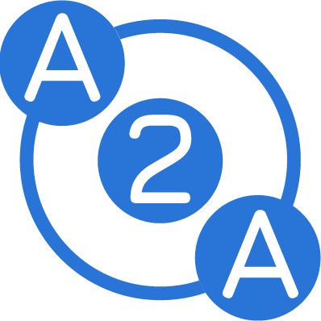
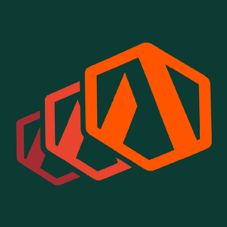

The Modern
AI Stack
Agents, MCP and Skills
We used to spend a lot of time arguing about these
Software development
is changing
Some will say it already changed.
The terminology moved faster than the explanation
You should not need a permanently open social feed to understand how people build with these tools.
How we got here

Claude 3.5 Sonnet
Coding felt different

MCP
Models connected to tools
goose
Early MCP-native agent
Agents ship code
Build, run, test, repeat
The open projects shaping this stack today
AAIF gives shared agent standards and infrastructure a neutral home under the Linux Foundation.
MCPModel and tool interoperability
Agent2AgentAgent communication
Agent RouterModels and tool routingAdewale 'Ace' Abati
I help developers understand and adopt technical products.
- Staff Developer Advocate, ex-Block
- GitHub Star
- Ambassador, Agentic AI Foundation (AAIF)
An agent plans, acts, observes and adjusts
It keeps moving through the loop until the task is complete, a limit is reached or a human needs to step in.
Help it know
your codebase
A capable model still arrives without your architecture, conventions, commands or hard-earned warnings.
AGENTS.md
Give the agent more context than it can infer from code.
A versioned instruction file for the commands, conventions and checks every coding agent should know.
## Navigate + set up pnpm dlx turbo run where <project> pnpm install --filter <project> Confirm package.json#name (ignore the root) ## Test the package Follow .github/workflows pnpm turbo run test --filter <project> pnpm lint --filter <project> Add tests for changed behavior. Keep the suite green. ## Before committing PR: [<project>] <Title> Run pnpm lint && pnpm test
CLAUDE.md. Keep shared rules in one source where possible./AGENTS.md # shared context ├── store/ │ ├── AGENTS.md # local context │ └── favorites.ts └── pages/ ├── AGENTS.md # section context └── dashboard/ ├── AGENTS.md # deeper context └── index.vue
Keep shared context at the root. Put module-specific context beside the code it applies to.
Help it get context from
the outside world
The task also depends on issues, documentation, browsers, databases and business systems outside the model.
MCP is an open protocol for connecting AI applications to external systems.
It standardizes how a host discovers and exchanges context with servers. It does not define the model, the agent loop or how the host uses that context.
Give the agent a feedback loop with the running system.
MCP can bring task history, the live browser, runtime failures and internal tools into the same working loop.
GitHub · Linear · Sentry
Read the issue, ownership history, pull requests and production trace behind the work.
The agent starts from evidence instead of reconstructing intent from code.Playwright
Open the app, exercise user flows, inspect accessible page structure and capture test evidence.
The agent can build, run and retest the same flow while it works.Chrome DevTools
Inspect console errors, network requests, DOM state, screenshots and performance traces.
The browser becomes a source of truth, not a final manual check.Internal MCP
Expose approved services, schemas, documentation or workflows as tools shaped for your environment.
The agent can use internal systems without hard-coding them into every prompt.Provide specialization
on demand
Tools provide access. A Skill packages the knowledge and procedure for a particular job.
Keep always-on context lean. Load specialist context for the job.
Project instructions apply broadly. A Skill adds its full procedure and resources only when the task matches.
--- name: company-z-design-guide description: Build interfaces that follow Company Z’s design system. --- # use approved tokens and components # load brand examples only when the task needs them pnpm ui:check
A Skill should earn its place.
Models already know many common processes. Package what is specific, repeatable and expensive to rediscover.
Generic capability
Do not freeze every useful prompt into permanent infrastructure.
- A familiar process with no local rules
- A one-off task that changes each time
- Something the model already does reliably
Your operating knowledge
Create one when consistency and local experience genuinely matter.
- A specific workflow you repeat
- Rules, templates or artifacts unique to your team
- A costly procedure the model should not rediscover
Give a bounded task its own agent.
A custom agent is a reusable specialist with its own prompt, context window and tool boundary.
--- name: security-reviewer description: Review changed code for exploitable risk. tools: Read, Grep, Glob --- Inspect the diff and follow data across trust boundaries. Return: - file and line - severity and exploit path - smallest safe fix
Enforce
deterministic checks
If it must happen every time, take it out of the prompt and put it in code.
Hooks attach code to moments in the agent lifecycle.
They can inspect an event, take an action and sometimes change what the harness does next.
// format after Claude edits or writes a file "hooks": { "PostToolUse": [{ "matcher": "Edit|Write", "hooks": [{ "type": "command", "command": "pnpm", "args": ["lint:fix"] }] }] }
SessionStartPrepareLoad environment state or initialize the workspace.
PreToolUseGuardInspect, allow or block an action before it runs.
PostToolUseReactFormat, test, log or add evidence after an action.
StopVerifyCheck the completion claim before the turn ends.
Claude Code documents 33 hook events across the agent lifecycle.
"PreToolUse": [{
"matcher": "Bash",
"hooks": [{ "type": "command",
"command": "./deny-risky.sh" }]
}]"PostToolUse": [{
"matcher": "Edit|Write",
"hooks": [{ "type": "command",
"command": "pnpm lint:fix" }]
}]Session and environment
SessionStartSetupInstructionsLoadedConfigChangeCwdChangedDirectoryAddedFileChangedWorktreeCreateWorktreeRemovePreCompactPostCompactPreModelSwitchPostModelSwitchSessionEndTurn
UserPromptSubmitUserPromptExpansionMessageDisplayNotificationStopStopFailureTool loop and MCP
PreToolUsePermissionRequestPermissionDeniedPostToolUsePostToolUseFailurePostToolBatchElicitationElicitationResultAgents and tasks
SubagentStartSubagentStopTaskCreatedTaskCompletedTeammateIdleThe harness is the operating environment that holds the loop together.
It connects the model, tools and workspace, then manages state, permissions, limits, approvals and observability around the run.
The same building blocks are showing up in new places.
MCP Apps
MCP servers can return interactive views when a chart, form or approval flow works better than text.
tool result → embedded UIWebMCP
A draft browser API lets web applications expose JavaScript tools directly to browser agents.
web app → browser agentPlugins
Some ecosystems bundle skills, hooks, commands and connections into one installable setup.
core pieces → shared packageUse the model for judgment.
Use code for guarantees.
The mature stack does not remove uncertainty. It decides where uncertainty is useful, where it needs guidance and where it is not allowed.
Handle ambiguity, trade-offs and novel work.
Supply local knowledge and a proven procedure.
Expose live capabilities and evidence from the environment.
Block unsafe actions and prove required conditions.
People arrange the same building blocks in different ways.
RPI
Separate understanding, decision-making and execution so a human can correct direction before code changes.
research
plan
implementGraph workflows
Define named steps and branches when the sequence must remain visible and predictable.
node
condition
transitionRalph loop
Repeat against a clear completion condition until tests or another verifier prove the work is done.
attempt
verify
repeatThank you.
Build the smallest stack that solves a real problem.
adewaleabati.com/slides/modern-ai-stack/
Guarantees where they matter.